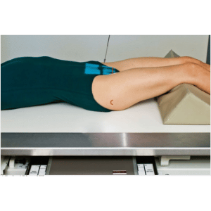
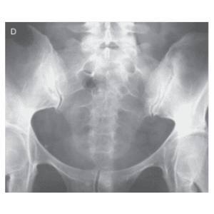
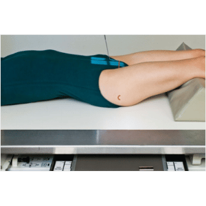
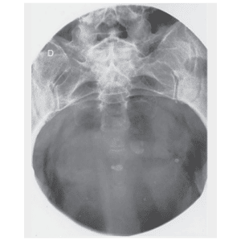
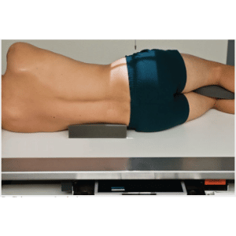
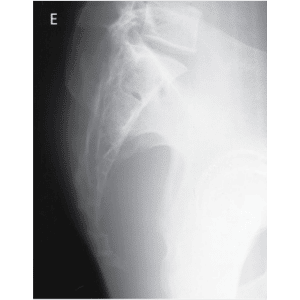

COLUNA SACRAL - AP
Paciente
Em decúbito dorsal, PMS sobre a LCM, braços estendidos ao longo do corpo, pernas semi-fletidas.
Chassis / Filme
24X30 longitudinal panorâmico.
Raio central
Com um ângulo de 15º no sentido cranial, orientado entre as EIAS e a sínfise púbica.
DFF
1.00 m – com bucky.


Observação: Em apnéia expiratória. Este exame poderá ser realizado em decúbito dorsal ou ventral, o que vai determinar como realizar são as indicações clínicas e as condições do paciente.
CÓCCIX - AP
Paciente
Em decúbito dorsal, PMS sobre a LCM, braços estendidos ao longo do corpo, pernas semi-fletidas.
Chassis / Filme
18×24 longitudinal panorâmico / 24X30 transversalmente.
Raio central
Com um ângulo de 10º no sentido caudal, orientado para ao nível das articulações coxo-femorais.
DFF
1.00 m – com bucky.


Observação: Em apnéia expiratória. Este exame poderá ser realizado em decúbito dorsal ou ventral, o que vai determinar como realizar são as indicações clínicas e as condições do paciente.
SACRO e CÓCCIX - PERFIL
Paciente
Em decúbito lateral, PMS paralelo à LCM, posicionar de modo que a projeção do cóccix fique sobre a LCM, o membro superior mais próximo do filme sob a cabeça e outro poderá o paciente segurar a extremidade superior da mesa, pernas fletidas.
Chassis / Filme
18×24 longitudinal panorâmico / 24X30 transversal
Raio central
⊥ na vertical, orientado 8 a 10 cm posterior a EIAS.
DFF
1.00 m – com bucky.


Observação: Em apnéia expiratória. Este exame poderá ser realizado em decúbito ou em ortostático, o que vai determinar como realizar são as indicações clínicas e as condições do paciente.